O kursie
Efektem kursu jest działający agent. Użytkownik zadaje mu pytanie, np. o artykuły na temat pracy licencjackiej. Agent sam wyszukuje je w arXiv i odpowiada na podstawie znalezionych wyników. Potrafi też wypisać z abstraktów problem badawczy, metodę, dane i wyniki.
Wymagania:
- przeglądarka,
- adres e-mail (do założenia konta w n8n),
- konto Google (do utworzenia klucza Gemini).
Słowniczek
| Słowo | Znaczenie |
|---|---|
| n8n | Serwis internetowy do budowania automatów, które łączą różne usługi. Automat układa się z klocków, bez pisania kodu. |
| Przepływ (workflow) | Jeden automat w n8n. Składa się z klocków połączonych liniami. |
| Węzeł (node) | Jeden klocek na planszy. Każdy węzeł wykonuje jedno zadanie. |
| Model językowy | Program, który rozumie i pisze tekst, np. ChatGPT. W kursie używany jest Gemini od Google. |
| Klucz API | Długi ciąg liter i cyfr, który działa jak hasło. Pozwala n8n korzystać z Gemini na koncie właściciela klucza. |
| arXiv | Bezpłatne archiwum artykułów naukowych, głównie z informatyki, fizyki i matematyki (arxiv.org). |
1. Czym jest agent
Zwykły czat z AI odpowiada tylko na podstawie tego, co model zapamiętał podczas uczenia. Niczego nie sprawdza w internecie, dlatego potrafi podawać tytuły artykułów, które nie istnieją.
Agent ma dodatkowo narzędzia, np. wyszukiwarkę. Sam decyduje, czy w danej chwili jej potrzebuje, i odpowiada na podstawie znalezionych wyników.
Agent w n8n składa się z pięciu części:
| Część | Zadanie | W tym kursie |
|---|---|---|
| Wyzwalacz (trigger) | Uruchamia agenta, tutaj: po wysłaniu wiadomości. | Okno czatu |
| Węzeł AI Agent | Główny klocek, łączy pozostałe części w całość. | AI Agent |
| Model językowy | Czyta pytanie, decyduje o kolejnym kroku i pisze odpowiedź. | Gemini Flash (darmowy klucz) |
| Pamięć | Przechowuje kilka ostatnich wiadomości, dzięki czemu można dopytywać. | Simple Memory |
| Narzędzie | Pobiera dane spoza modelu. | Wyszukiwarka arXiv |
Jak agent odpowiada na pytanie:
- Czyta pytanie.
- Decyduje, czy trzeba coś wyszukać. Jeśli tak, sam układa zapytanie do wyszukiwarki.
- Czyta wyniki.
- Szuka ponownie albo pisze odpowiedź.
Ten sposób działania nazywa się ReAct (od angielskiego reason + act: przemyśl i zrób).
2. Konta i klucz
- Konto n8n. Na stronie n8n.io założyć konto. Pierwsze 14 dni jest bezpłatne i nie wymaga podania karty. Po rejestracji zalogować się.
- Klucz Gemini. Na stronie aistudio.google.com zalogować się kontem Google. Kliknąć Get API key, a następnie Create API key. Skopiować klucz i zachować go, np. w notatniku. Będzie potrzebny w rozdziale 5.
3. Nowy przepływ i wyzwalacz czatu
- Na stronie głównej n8n kliknąć Create workflow.
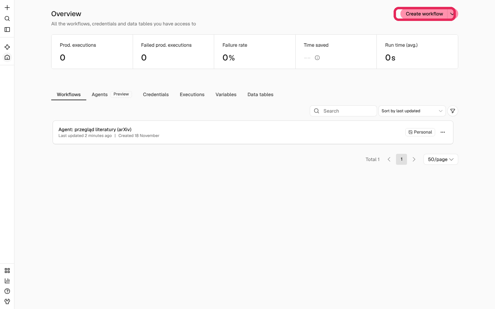
Przycisk tworzenia nowego przepływu. - Pojawi się pusta plansza. Kliknąć Add first step…
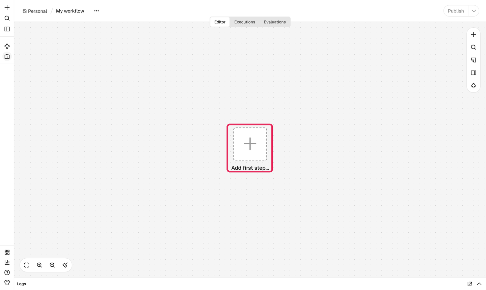
- W wyszukiwarkę wpisać
chati wybrać Chat.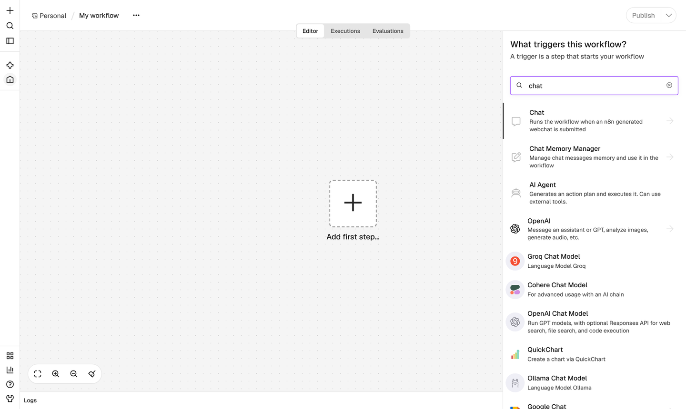
- W części Triggers wybrać On new Chat event.
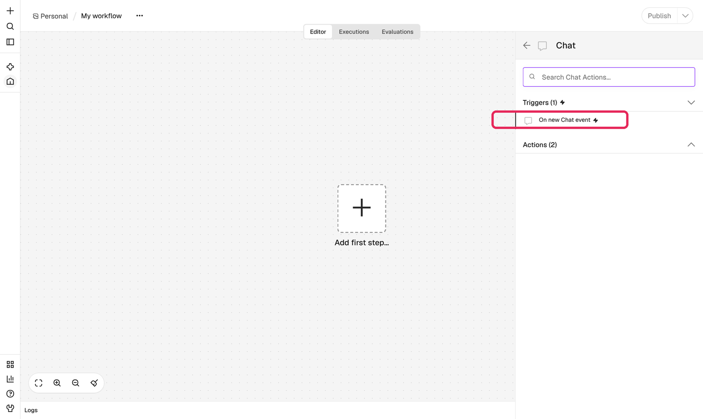
- Otworzy się panel ustawień. Niczego nie zmieniać, zamknąć go krzyżykiem w prawym górnym rogu. Na planszy pojawi się węzeł When chat message received. To on uruchamia agenta po wysłaniu wiadomości.

Plus po prawej stronie węzła służy do dodania kolejnego kroku.
4. Węzeł AI Agent
- Kliknąć + po prawej stronie wyzwalacza i wpisać
agent. Wybrać AI Agent.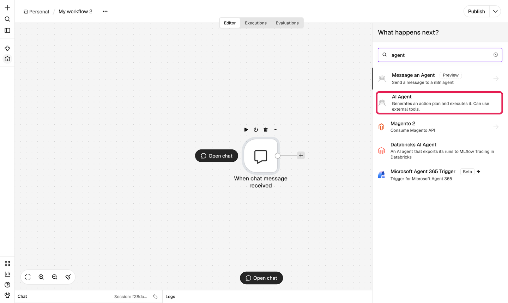
Pierwszy na liście jest „Message an Agent”. To inny węzeł. Należy wybrać AI Agent. - Otworzy się panel agenta. Niczego nie zmieniać: agent domyślnie dostaje treść wiadomości z czatu. Na dole panelu są trzy miejsca na kolejne części: Chat Model (model), Memory (pamięć) i Tool (narzędzie). W instrukcji nazywane są gniazdami.
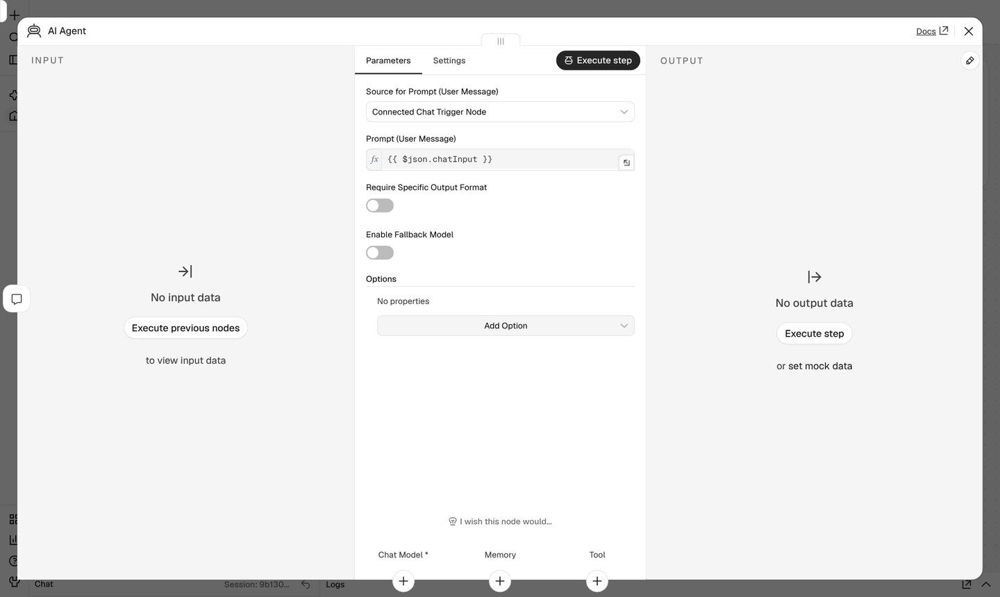
- Zamknąć panel. Pod węzłem agenta widać trzy gniazda z plusami. Czerwona gwiazdka przy Chat Model oznacza, że bez modelu agent nie zadziała.

5. Model językowy Gemini
- Kliknąć + pod gniazdem Chat Model, wpisać
geminii wybrać Google Gemini Chat Model.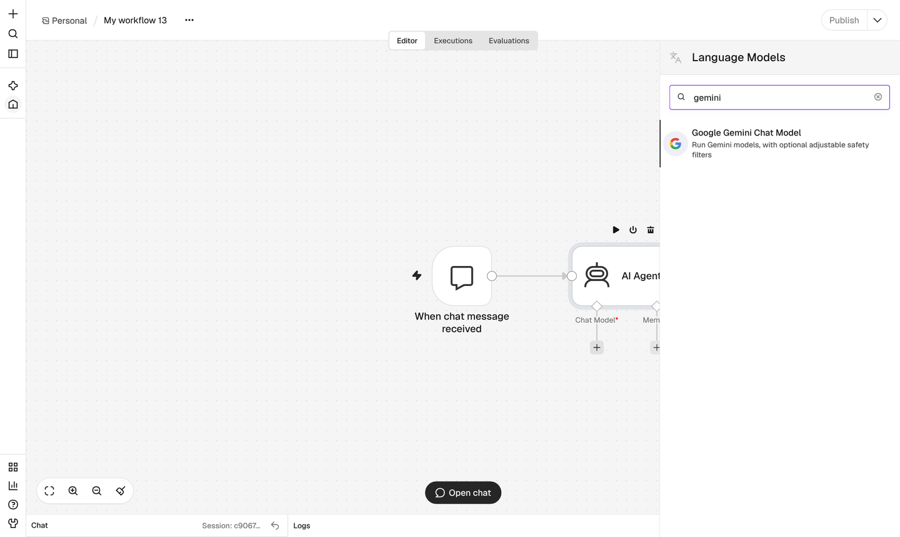
- W polu Credential wybrać Create new credential. Pola Host nie zmieniać. W pole API Key wkleić klucz z rozdziału 2 i kliknąć Save. n8n zapamięta klucz, więc później nie trzeba go wklejać ponownie.

- Z listy Model wybrać
models/gemini-3.5-flash-lite. Jeśli go nie ma, wybrać inny model z Flash-Lite lub Flash w nazwie, bo mają najwyższy darmowy limit. Modeli Pro nie wybierać. Na liście mogą być też starsze modele, np. Gemini 2.5. Nowe konta nie mają do nich dostępu i dostają błąd 404.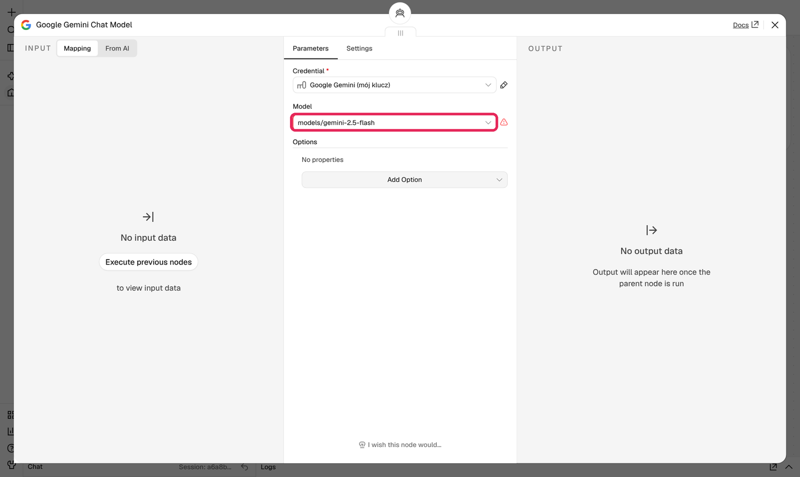
Pole na zrzucie jest czerwone, bo użyto przykładowego klucza. Z prawdziwym kluczem pojawia się lista modeli. - Zamknąć panel modelu.
6. Pamięć i pierwszy test
- Kliknąć + pod gniazdem Memory i wybrać Simple Memory. Niczego nie zmieniać, zamknąć panel.

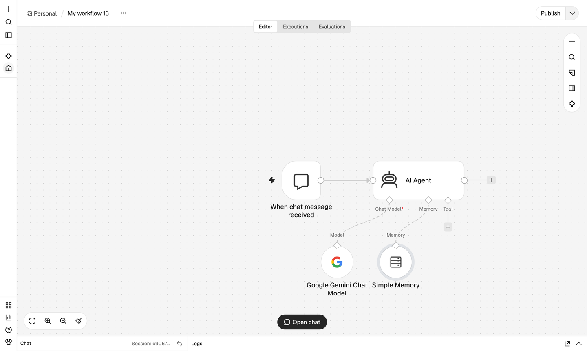
Agent ma model i pamięć. Nie ma jeszcze narzędzia. - Zapisać przepływ: Ctrl+S (na Macu Cmd+S). Kliknąć Open chat na dole ekranu. Po lewej otworzy się okno czatu, a po prawej panel Logs, w którym widać kolejne kroki agenta.
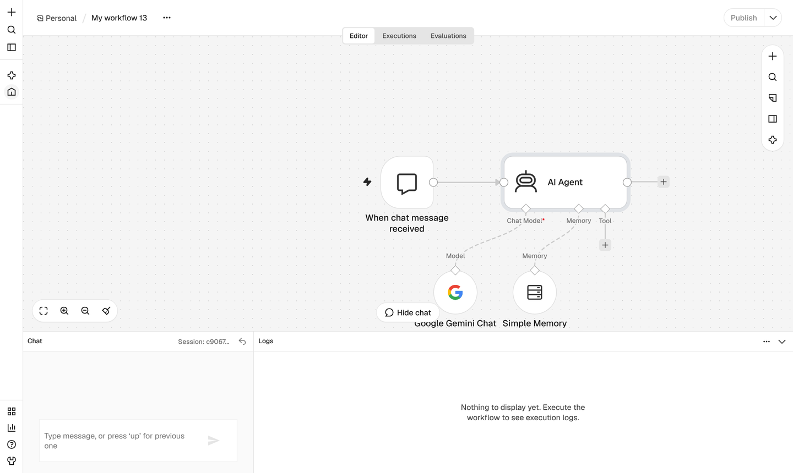
- Wysłać agentowi wiadomość:
Podaj 5 najnowszych artykułów naukowych o altmetrii, z linkami.
7. Narzędzie: wyszukiwarka arXiv
W tym rozdziale agent dostaje wyszukiwarkę. arXiv udostępnia przeszukiwanie swoich zbiorów za darmo i bez klucza. Ma też osobną kategorię cs.DL (Digital Libraries) z pracami z bibliometrii, naukometrii i altmetrii.
Do połączenia z arXiv służy węzeł HTTP Request Tool. Pobiera on dane spod adresu internetowego, podobnie jak przeglądarka pobiera stronę.
- Kliknąć + pod gniazdem Tool i wybrać HTTP Request Tool.
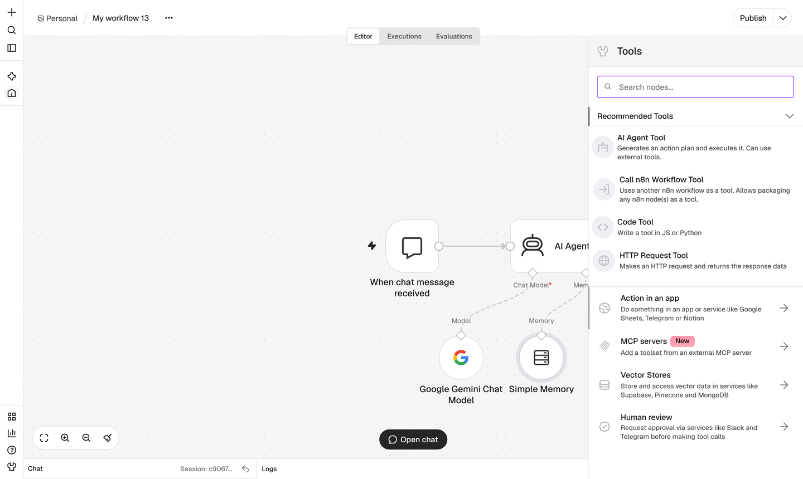
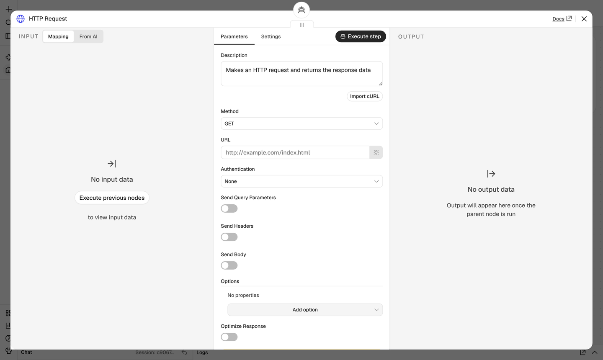
Pusty panel narzędzia. Kolejne kroki opisują, jak go wypełnić. - Nazwa. Kliknąć nazwę węzła u góry panelu (HTTP Request) i zmienić ją na
szukaj_w_arxiv. Model widzi tę nazwę, kiedy wybiera narzędzie. - Opis. Usunąć tekst z pola Description i wkleić poniższy. To instrukcja dla modelu: do czego służy narzędzie i jak z niego korzystać. Od tego opisu zależy, czy agent w ogóle użyje wyszukiwarki.
Wyszukuje artykuły naukowe w bazie arXiv. Zwraca do 5 wyników w formacie XML: tytuł, autorzy, data, abstrakt i link. Używaj zawsze, gdy użytkownik pyta o publikacje, literaturę lub badania na jakiś temat. Parametr search_query to zapytanie po angielsku w składni arXiv, np.: - all:altmetrics - all:bibliometrics AND all:"large language models" - cat:cs.DL AND all:citation (cs.DL to kategoria Digital Libraries: bibliometria, naukometria, komunikacja naukowa). - Adres. W polu Method zostawić
GET(„pobierz dane”). W pole URL wkleić:https://export.arxiv.org/api/query - Parametry. Parametry określają, czego szukać, ile wyników zwrócić i w jakiej kolejności. Włączyć Send Query Parameters i przyciskiem Add Parameter dodać trzy parametry:
Name Value Znaczenie search_querywypełnia agent (krok 6) czego szukać max_results5liczba wyników sortByrelevancenajtrafniejsze wyniki na początku - Pole wypełniane przez agenta. Treść wyszukiwania (
search_query) za każdym razem jest inna, dlatego układa ją agent. Kliknąć ikonę gwiazdek po prawej stronie pola Value (podpis Let the model define this parameter). Jeśli ikony nie ma, wkleić w pole:{{ $fromAI('search_query', 'Zapytanie w składni arXiv, po angielsku', 'string') }}
Gotowe narzędzie. Ramki zaznaczają opis narzędzia i ikonę, która przekazuje pole modelowi. - Zamknąć panel i zapisać przepływ. Gotowy agent wygląda tak:
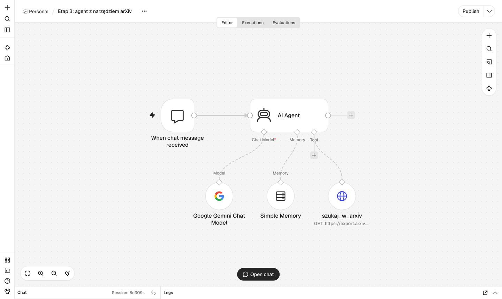
- Test. Otworzyć czat i zadać to samo pytanie o altmetrię co w rozdziale 6. Odpowiedź powinna teraz zawierać prawdziwe artykuły z linkami do arxiv.org.
- Podgląd działania agenta. W panelu Logs po prawej stronie czatu rozwinąć kolejne kroki. Widać w nich:
- zapytanie, które agent wysłał do arXiv,
- odpowiedź arXiv (surowe dane w formacie XML, razem z abstraktami),
- odpowiedź, którą agent na tej podstawie napisał.
8. Instrukcja systemowa
Instrukcja systemowa (System Message) to stały tekst, który agent dostaje przed każdą rozmową. Określa rolę agenta i zasady, których ma przestrzegać. Osoba pisząca na czacie jej nie widzi.
- Kliknąć dwukrotnie węzeł AI Agent. Kliknąć Add Option i wybrać System Message.
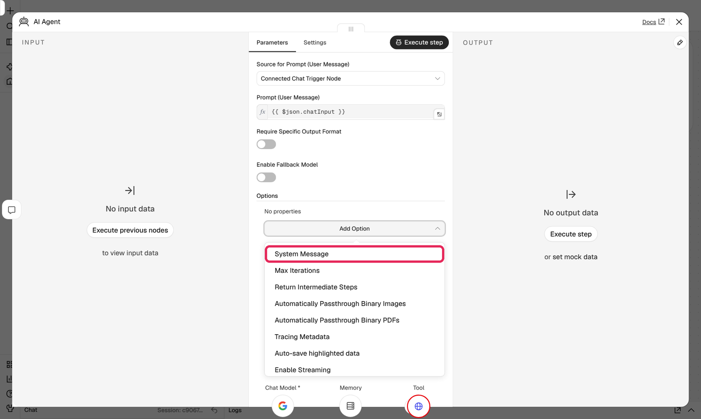
- Usunąć tekst z pola i wkleić poniższy. Zapisać przepływ.
Jesteś asystentem przeglądu literatury naukowej. Zasady: 1. Gdy użytkownik pyta o publikacje lub badania, zawsze najpierw użyj narzędzia szukaj_w_arxiv. Zapytania twórz po angielsku. 2. Podawaj wyłącznie artykuły zwrócone przez narzędzie: tytuł, autorzy, rok, link do arXiv. Nigdy nie wymyślaj publikacji. 3. Jeśli narzędzie nic nie zwróciło, powiedz to wprost i zaproponuj inne zapytanie. 4. Na pytania niezwiązane z literaturą odpowiadaj bez używania narzędzia. 5. Odpowiadaj po polsku, zwięźle.
9. Wyciąganie informacji z abstraktów
Agent może nie tylko znaleźć artykuły, ale też wypisać z abstraktów konkretne informacje: metodę, dane, wyniki. Podobne zadania na wcześniejszych zajęciach wykonywały małe modele (rozpoznawanie nazw, czyli NER, i analiza sentymentu). Tutaj wykonuje je model językowy.
Poniżej znajdują się gotowe polecenia. W miejsce [TEMAT] należy wpisać temat pracy licencjackiej i wysłać polecenie agentowi.
Tabela przeglądu literatury
Znajdź 5 artykułów na temat: [TEMAT].
Dla każdego wypełnij tabelę w formacie markdown z kolumnami:
Tytuł | Rok | Problem badawczy | Metoda | Dane / zbiór danych | Główny wynik | Nastawienie autorów (entuzjastyczne / neutralne / krytyczne) | Fragment abstraktu uzasadniający nastawienie
Korzystaj wyłącznie z treści abstraktów. Jeśli jakiejś informacji nie ma w abstrakcie, wpisz „brak w abstrakcie”.Gotową tabelę można skopiować do Excela lub Arkuszy Google.
Różne zapytania do bazy
Moja praca licencjacka dotyczy tematu: [TEMAT].
Ułóż 3 różne zapytania do arXiv: szerokie, wąskie i ujmujące temat z innej strony. Wykonaj każde z nich.
Dla każdego zapytania podaj jego treść, liczbę trafnych wyników i jeden najlepszy artykuł.Metody badawcze
Znajdź 5 artykułów na temat: [TEMAT].
Pogrupuj je według metody badawczej (np. ankieta, analiza bibliometryczna, eksperyment, studium przypadku, analiza tekstu).
Dla każdej grupy podaj tytuły i jednym zdaniem opisz, co łączy te prace.Źródła danych
Znajdź 5 artykułów na temat: [TEMAT], w których autorzy analizują dane.
Wypisz, z jakich źródeł danych korzystali (np. Scopus, Web of Science, OpenAlex, ankiety, media społecznościowe) i jak duży był zbiór danych.
Jeśli abstrakt tego nie podaje, napisz „brak w abstrakcie”.Definicje pojęć
Znajdź artykuły na temat: [TEMAT].
Wypisz, jak autorzy rozumieją lub definiują pojęcie [POJĘCIE]. Przy każdej definicji zacytuj fragment abstraktu i podaj tytuł artykułu.Ograniczenia i luki
Znajdź 5 artykułów na temat: [TEMAT].
Na podstawie abstraktów wypisz ograniczenia, które wskazują sami autorzy, oraz pytania, których nie badali.
Przy każdym punkcie podaj, z którego artykułu pochodzi. Nie dopisuj niczego, czego nie ma w abstraktach.Stanowiska autorów
Znajdź artykuły na temat: [TEMAT].
Podziel je na trzy grupy: autorzy oceniający zjawisko pozytywnie, neutralnie i krytycznie.
Przy każdym artykule podaj fragment abstraktu, na podstawie którego go przypisałeś.10. Rozwiązywanie problemów
Gotowy agent z pliku
Gotowego agenta można wczytać z pliku zamiast budować go od zera.
- Pobrać plik agent-arxiv-n8n.json.
- W n8n utworzyć nowy, pusty przepływ.
- Kliknąć … obok nazwy przepływu u góry, wybrać Import, potem From File i wskazać pobrany plik.
- Otworzyć węzeł Google Gemini Chat Model i w polu Credential wybrać własny klucz.
- Sprawdzić, czy w polu Model jest
models/gemini-3.5-flash-lite.
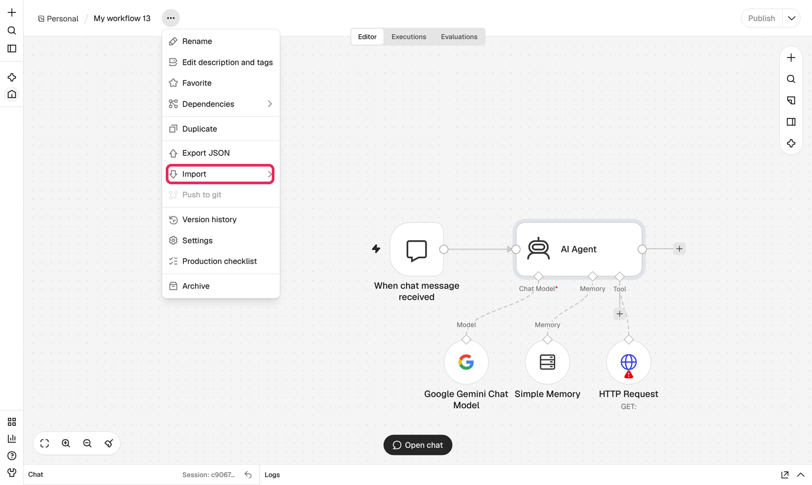
Częste problemy
| Objaw | Przyczyna | Rozwiązanie |
|---|---|---|
| Błąd 429 albo „Resource exhausted” | Wyczerpany darmowy limit Gemini. | Odczekać minutę i spróbować ponownie. Jeśli to nie pomaga, wybrać model Flash-Lite albo utworzyć klucz na innym koncie Google. |
| Błąd 404 „This model … is no longer available to new users” | Model nie jest już dostępny dla nowych kont. | W węźle modelu wybrać model podany w treści błędu, np. models/gemini-3.5-flash-lite. |
| Błąd klucza w węźle modelu | Klucz został źle wklejony. | Dodać credential ponownie. Sprawdzić, czy na początku lub na końcu klucza nie ma spacji. |
| Agent nie korzysta z wyszukiwarki | Opis narzędzia jest zbyt ogólny albo brakuje instrukcji systemowej. | Sprawdzić pole Description (rozdział 7) i instrukcję systemową (rozdział 8). |
| arXiv zwraca błąd 503 albo nic | Zbyt wiele zapytań z jednej sieci w tym samym czasie. | Odczekać kilka sekund i spróbować ponownie. |
| Odpowiedź urwana albo dziwna | arXiv odesłał zbyt dużo tekstu. | W parametrze max_results zmienić 5 na 3. |
| Koniec okresu próbnego n8n | Minęło 14 dni od rejestracji. | Założyć nowe konto i wczytać gotowego agenta z pliku (opis wyżej). |